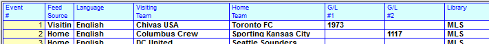

Event Inventory
Event inventory and Seasons are defined in the Programming screen. The type of inventory created is determined by how the Event is sold. For example if Pre Event, Post Event, In Event, or other special avail positions can be sold, each avail type will be entered in the program library as a specific named avail. Named avails can help manage inventory and ensure an advertiser books into the correct position within the event.
Defining Sports Inventory
Inventory is defined for Sports vehicles the same way it is defined for any other vehicle type, by creating a library in the Programming screen. Anything that is sold, must be defined as a Contract Avail. A Contract Avail can be a generic network avails, or specific named avails (such as Pre-Game, In-Game, and Post-Game) that will help with selling and scheduling spots into specific positions within the event.
The Length of Time must be long enough to encompass the entire Event.
In this Program Library example, NCAA Football has a running length estimated to be 3 hours 30 minutes. There are three types of avails that can be sold for the Events, Pre-Game, In-Game, and Post Game.
Defining a Named Avail
There is no limit to the number of named avails you can create and sell.
Click New in the Program Exclusion or Avail Name field, and Tab. You can determine whether (and to where) an avail’s spot will be exported while defining your avail by answering Yes/No to the following questions: Affiliate System, ISCI Export, Audio Delivery, and Automation Export.
When you have finished defining your library, save your work and click Done. This will return you to the main Programming screen.
Defining the Event Schedule
Once you have defined the library, it will appear in the Library field along the left hand side if the Programming screen. You can now define the Event Schedule for the sport vehicle. Click “Define Schedule” and you will be directed to the Event Schedule Screen.
Event Schedules
Sports vehicles are not sold by date and time, but rather by Seasons.
The Event Schedule Screen can be sorted by any of the blue column headers.
This Event Schedule example has all Site Optional Fields turned on: Feed Source, Language, Pre-empt Vehicle.
Defining the Season
Defining a new season every year keeps your Event Schedules manageable, and allows you to easily compare annual revenue figures.
General Season Rules
There are basic rules that every season must follow:
- The Start and End date range must be broad enough to encompass every event listed in the season, for any event status (including Canceled).
- Season dates cannot overlap one another. Every new season must have a start date that is after the end date of the previous season.
- Two seasons cannot have dates in the same Monday through Sunday week (of the same year). For example, if a season ends on a Thursday, the next season cannot start on that Friday, Saturday, or Sunday. The earliest date that it can start is Monday of the following week.
- It is recommended for seasons to start on a Monday day of the week and end on a Sunday.
- Even if the last game of the season is not on a Sunday, a Sunday end date can still be given for the season to follow the recommended rule of making each season end on a Sunday.
Creating a new season
To define a new season, select New from the dropdown in the upper right corner and press Tab. You can copy a season from an existing season by modeling, or select None to create a season from scratch.
Give the season a name, start and end date, enter the number of events.
- The recommended practice is for the start date to be a Monday. This can be manually entered, or selected from the calendar dropdown.
- The start and end dates must be equal to or greater than the dates of the first and last events of the season.
- Indicate whether this should be the default season used throughout the system by setting the “Default” value to Yes or No.
Number of Events
When the initial Event schedule is defined, the total number of Events must be entered in the Number of Events field. The system will create the number of Event lines that you entered in that field and assign a number to each line.
You can increase or decrease the number of events if necessary. If you decrease the number, those Events that were decreased will have an Event Status of C for Canceled.
Feed Source and Language
Feed Source and Language are both optional categories which may or may not be turned on in your system.
- The Feed Source is a handy way to sort all of your games by Home v Away events while creating a proposal/order.
- The Language feed is a way to create separate sets of inventory for different language broadcasts, and an easy way to sort your various language broadcasts.
Visiting and Home Column Titles
The “Event Title 1” and “Event Title 2” fields in Site Options -> Sports and in Vehicles -> Options -> Sports allow you to define custom text for the Event 1 and Event 2 (Visiting and Home Team) column headers.
- Anything defined in the Vehicle screen will supersede what is defined in Site Options -> Sports.
- If not defined in either location, Visiting Team and Home Team will appear in the column headers.
Defining Visiting and Home Teams
The two teams playing in an event are defined in the Event Schedule. These teams (or their abbreviations) will appear during proposal/order entry, and can be shown on the printed proposal/order, on the Sports Log, on the Affiliate Affidavit, and on various reports.
If you are unsure of who is playing in an event, i.e. a post season play off game, you can enter TBA in both fields, so that the event can be sold. Once the teams are determined, you can easily go into the Programming -> Define Schedule, and add the actual team names.
Sub-Total Fields
Additional customization is possible on the Event Schedule screen. Subtotals can be entered for events by defining the “Event Subtotal Title” fields in Site Options -> Sports, then entering the subtotal name (or number) for the events (up to two per event). In this example, GL #1 and GL #2 were the field names defined in Site Options -> Sports.

Selecting the Event Library
You can define multiple Event Libraries in Programming -> Library to accommodate various formats. Choose the appropriate library from the Library dropdown. You can always change a library if the format changes.
Air Date and Air Time
Define an air date and air time for each event in the Air Date and Air Time fields. Multiple events can air at the same date/time. If the schedule has not yet been determined, you can enter an estimated date/time so that the event can be sold, and the exact time/date can later be updated.
Event Status
An event can have a status of Firm, Tentative, Postponed, or Canceled.
- Tentative
- When an event is set with a Tentative status, the date and time must be defined. The inventory is shown on the proposals, the spots can be ordered and booked, and reports will reflect the Event dates and times entered
- Firm
- When an event is set with a Firm status, any applicable preempting vehicle must be defined, as well as its date and time. The inventory is shown on proposals and the spots can be ordered and booked
- Postponed
- If a tentative event is set to postponed, the spots remain scheduled. When you enter the new airing date of the Event, the spots will reschedule automatically
- If a firm Event is set to postponed, the spots will remain scheduled and if there is a preempt vehicle defined, its avails will be unlocked
- Canceled
- When an Event is canceled, the user will be asked if the scheduled spots should be set to cancelled or missed. If there is a preempt vehicle defined, its avails will be unlocked.
- If you cancel an Event on the same day as it was scheduled to air, the spots will remain in red avails within the event and can be moved into another event or vehicle manually
- If you cancel an Event in the future, the spots will go to the missed file
Event Format Changes
If the inventory format of an Event has changed, or if there is going to be a special format for one of an Events, there are two steps needed to change the Event programming or format:
- Create a new library to reflect the changes or edit the existing library in the Programming Library screen
- Change the Event format from the old library to the new library in the Event Schedule screen
Changing an Event’s Format
From the Event Schedule screen, click the Formats button along the bottom of the screen. This will bring up the format screen where you can select the events you wish to change, and their new formats.
Select the new Format from the right hand side. You can change the Formats for all events by checking “All Events”, or select an event by holding CTRL while mouse clicking. Select the new/replacement Formats from the right side, and click the Change button.
When you have completed the schedule, select the Save or Done button.
Event Schedule Changes After Reconciliation
Once an event has been reconciled, either by Live Log, importing an automation file, or manually in Post Log, you must not change any information for that event in the Event Schedule. If you do, all reconciled/posted information for the event will be lost and will need to be re-entered.
Syncing Event Schedules
If you have two vehicles with identical Event Schedules, for example, an English feed and a Spanish feed, rather than entering the schedule/season twice, you can ‘sync’ the second vehicle to the existing schedule.
To do so, select the vehicle you wish to sync with an existing schedule, and click Sync.
From the list of Sports vehicles, select the vehicle whose library you wish to sync with.
Click OK, and the event schedule will be created. If the vehicle has an existing schedule, the existing schedule will be overwritten.
Preempting Programming
If you are preempting other programming to broadcast your event, you can do so in the Event Schedule.
To preempt, select the program to be preempted from the drop down in the Pre-empt Vehicle field. Tab and save. Once the status of the event is Firm, the regular program’s spots will be preempted, and its avails will be locked to prevent anything from scheduling into them. If the event time/date is changed, the locked preempted avails are adjusted.
Program Screen Event Schedule
Once you have completed and saved your schedule, your events will be listed by Event Number and team abbreviations on the main Programming screen.
Any canceled events will appear with a yellow background and an X over them. Should a canceled event’s status be changed, the X will disappear and the yellow background will return to white.